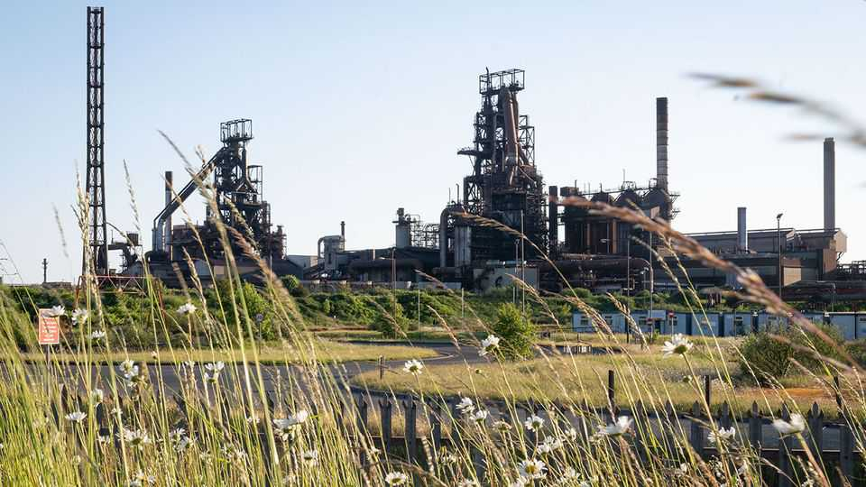

Steelyard blues
Reversing the long decline of a traditional manufacturing industry is hard to do

Aug 27th 2026
THERE CAN be few more romantic examples of heavy manufacturing than Tata Steel’s hot rolled-strip mill at Port Talbot in south Wales. Red-hot bars pass through ancient machines in an almost mile-long 1950s factory, to be turned into steel coils that are loaded onto old rail wagons. Scattered around the huge site are rusting steel plants, amid which a state-of-the-art electric arc furnace (EAF) is being built to catch up with competitors. It is an evocative spot to ponder the idea of reindustrialisation promoted by Andy Burnham, the newish prime minister.

The steel industry in Britain has been declining for decades. Annual crude-steel output has fallen from almost 30m tonnes in the early 1970s to less than 3m tonnes today. Direct employment has shrunk from around 320,000 to barely 30,000 (see chart). Steel output and employment have fallen in America and Europe too, but more slowly. High energy costs are widely blamed. But the biggest culprit is China, which produces over 1bn tonnes of steel a year, more than half of total world output, much of it dumped on global markets at below cost.
Pursuing anti-dumping cases against China for breaking World Trade Organisation rules is tricky, so the more usual defence is counter-subsidies, tariffs and quotas. Donald Trump led the way with tariffs on American steel imports in 2018. Now it is the turn of Britain and the European Union. In early July both halved their tariff-free quotas of steel imports and doubled tariffs to 50% above those levels.
Britain and the EU chose to apply these tariffs to each other, a decision David Bailey of Birmingham University calls “madness”. This especially hurts Britain, which exports over 70% of its steel to the EU. Mutual tariffs and quotas will not curb annual global overcapacity, which the OECD, a think-tank, expects to rise to 721m tonnes in 2027. Tariffs impose costs on steel users, who outnumber steel producers by over ten to one and claim they cannot get the quality of steel they need from domestic sources. Northern Ireland, which is part of the EU goods market, may even end up liable to pay both EU and British tariffs.
Britain and the EU would do better to co-operate. Under the post-Brexit “reset” the two plan full free trade in food, which could be a model for steel. Both could do more to promote green steel, since they apply the same environmental rules. In Britain that points to closing the country’s last two blast furnaces, run by a newly renationalised British Steel in Scunthorpe. The future, as Gareth Stace of the lobby group UK Steel concedes, lies with EAFs that are cheaper to run and emit less carbon. These use as their raw material scrap steel, of which Britain produces a large annual surplus of over 10m tonnes, not iron ore.
Traditionalists complain that if Britain loses its last blast furnaces it will be the only G7 country left with no primary producer of virgin steel. This, it is said, is a big risk to the country’s security. Yet with more careful regulation of recyclers, the quality of steel produced by EAFs using scrap can be as good as virgin steel. And the security case is less persuasive given that primary producers rely on imported iron ore and coal, mostly from such faraway places as Australia or Brazil.
There may be other reasons to help domestic steelmakers. Big steel firms are important job creators in deprived areas. And it may be a mistake to end up relying too much on China for steel. But Europe remains a big producer, as well as being far closer. Under its steel strategy the government is setting aside as much as £2.5bn ($3.4bn) during this parliament from its national wealth fund to subsidise the likes of British Steel and Tata, which is a lot for what is now a relatively small industry.
Yet steel has powerful supporters. For decades British politicians have argued back and forth over nationalisation, privatisation and renationalisation of steel. Steel has historical links not just to specific regions but also to the Labour Party and trade unions. It might be sound economics to assert that Britain no longer has a divine right to be a big steel producer. But politics could yet sustain the romance of the industry for a few decades to come. ■